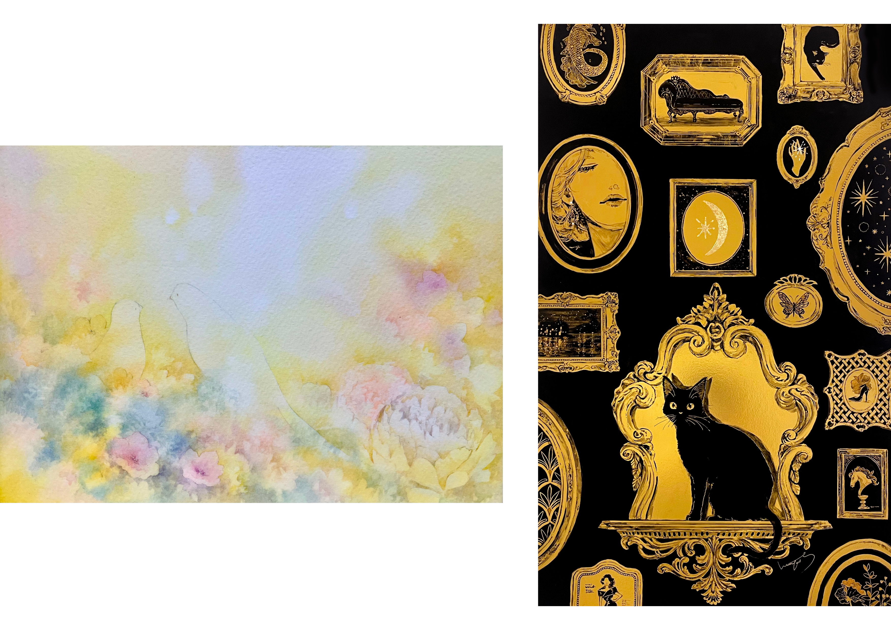

色展 ─ 黄色をテーマにした展覧会
2026年10月2日〜10月28日
千住宿歴史プチテラス
-------------------------
ご連絡ありがとうございます。 
修正箇所を確認しました。
こちらで問題ありません。
きっちりとご確認いただきましてありがとうございました！
それでは以下にコピペ用の作家名簿と、招待作家の作品画像を添付しますね。
引き続きよろしくお願いいたします！
-------------------------
＜出品作家＞
🟨前期日程 2026年10月3日（土）～10月12日（月）
⭐️ 招待作家
ふなやまえみ / 透明水彩画・花・ほんわか
國谷 敦 / アクリル画・標識・社会風刺
五十嵐 好美 / デジタル・子猫・やわらかな表現
果林 / 透明水彩・女の子・鮮やかな色彩
平山 ゆか / 油彩画・マチエール・奥行のある色味
砂田節子 / iPhone写真・和紙印刷・黒背景植物
間嶋郁子 / アクリル画・日本画・想いを描く
鈴木ひろや / 透明水彩画・風景・男の子
🟨 後期 2026年10月17日（土）～10月28日（水）
⭐ 招待作家
NatsukiSumitani / ゴールドシリーズ ・アクリル画・猫
榊 幹恵 / アクリル画・テクスチャーアート・ゆめかわ
吉田 明彦 / アクリル画・風景画・力強い色味
Shio / 油彩画・癒し・ふんわり
大倉恵子 / アクリル画・聖堂・光
矢口みき / 透明水彩・風景画・淡い光彩
おくの さとし / 点描画・絵本的・色彩
中島翔子 / 金箔・アクリル画・花鳥風月
houkoh（黄展主催） / ミクストメディア・アクリル画・書
色展公式HP
houkoh.com/iroten/